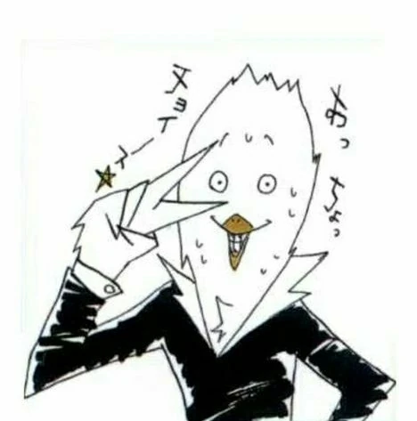
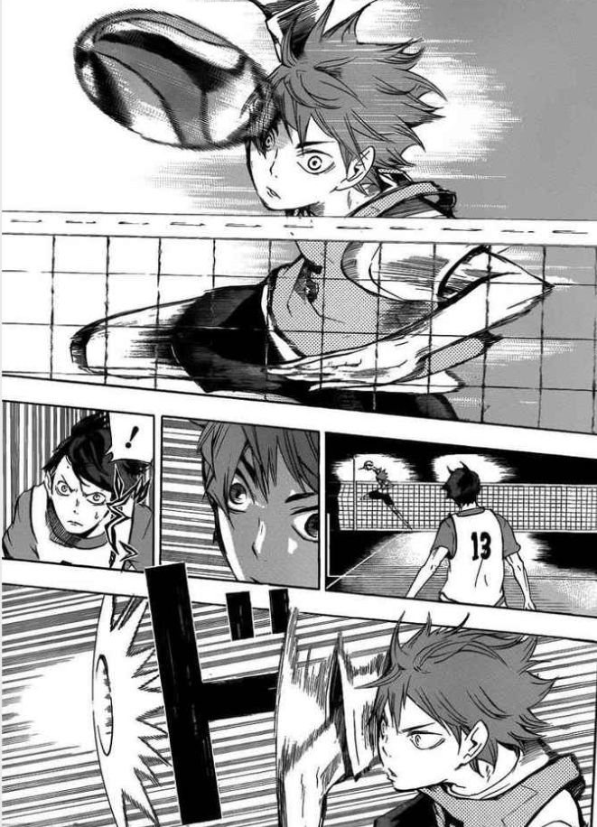

Haruichi Furudate
Nacimiento:nació el 7 de marzo de 1983 en la prefectura de Iwate, Japón.
Pasión por el voleibol:Pasión por el voleibol: Furudate jugó voleibol durante sus años de secundaria, lo que influyó significativamente en la creación de Haikyuu!!. Aunque no continuó con el deporte, su experiencia como jugador le permitió capturar la emoción y la dinámica del voleibol en el manga.
Carrera inicial:Comenzó su carrera como mangaka trabajando en varias historias cortas. Una de sus primeras obras fue King Kid, que fue publicada en Weekly Shōnen Jump en 2009.
Exito con Haikyuu!!: En 2012, Furudate lanzó Haikyuu!! en la revista Weekly Shōnen Jump. La serie ganó rápidamente popularidad por su narrativa motivadora, sus personajes carismáticos y su representación precisa del voleibol.
Estilo y enfoque:Furudate es conocido por su habilidad para transmitir el dinamismo del deporte, los desafíos emocionales de los personajes y los valores del trabajo en equipo. Aunque mantiene un perfil bajo, su dedicación a la autenticidad del voleibol es evidente en cada capítulo.
Final de Haikyuu!!:La serie concluyó en 2020, después de 8 años de publicación y 45 volúmenes. Fue adaptada a un exitoso anime que amplió su audiencia a nivel mundial.
"Haruichi Furudate ha dejado un legado significativo en el mundo del manga deportivo, inspirando a muchos lectores y espectadores a interesarse en el voleibol y en los valores de la perseverancia y el trabajo en equipo."
Manga
El manga Haikyuu!! fue publicado por Haruichi Furudate en la revista Weekly Shonen Jump de Shueisha desde febrero de 2012 hasta julio de 2020. La serie se extendió por un total de 10 años y fue muy exitosa tanto en Japón como internacionalmente.
Inicio de publicación: 20 de febrero de 2012(en el número 12 de la revista Weekly Shonen Jump de 2012).
Final de publicación: 20 de julio de 2020(en el número 36-37 de Weekly Shonen Jump de 2020).
Volumenes:La serie fue recopilada en 45 volúmenes (tomos) en total, que fueron lanzados entre 2012 y 2020. El volumen final, el volumen 45, fue lanzado el 4 de noviembre de 2020, cerrando la historia con el desenlace del torneo nacional.